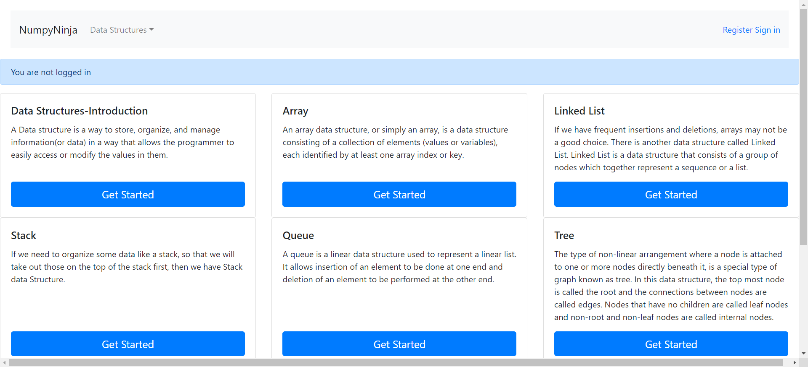
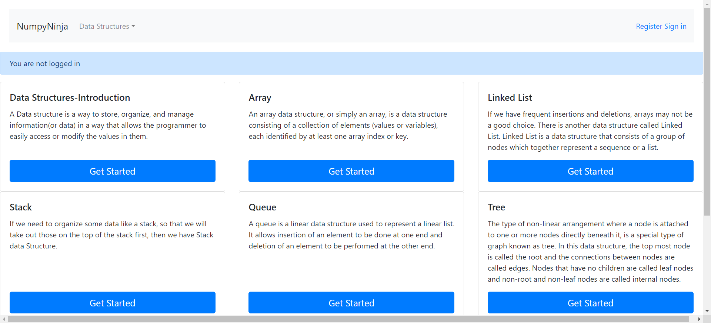

-
Array
11:30:33 PM / 00:00:16:374 Fail
Array
05.07.2023 11:30:33 PM 05.07.2023 11:30:49 PM 00:00:16:374 · #test-id=1FailValidate Array pageGiven User is logged in to HomePageWhen User clicks on Get Started button on Array panelThen User is navigated to the Array pageappHooks.Hooks.tearDown(io.cucumber.java.Scenario)Validate Array page FailValidate 'Arrays in Python' linkGiven User is in Array pageWhen User clicks on Arrays in Python linkappHooks.Hooks.tearDown(io.cucumber.java.Scenario)Validate 'Arrays in Python' linkThen User is navigated to the Arrays in Python pageStep skippedFailValidate 'Arrays Using List' linkGiven User is in Array pageWhen User clicks on the Array Using List linkappHooks.Hooks.tearDown(io.cucumber.java.Scenario)Then User is navigated to the Arrays using list pageStep skippedFailValidate 'Basic Operations in List' linkGiven User is in Array pageappHooks.Hooks.tearDown(io.cucumber.java.Scenario)When User clicks on the Basic Operations in List linkStep skippedThen User is navigated to the Basic operations in list pageStep skippedFailValidate 'Applications of Array' linkGiven User is in Array pageappHooks.Hooks.tearDown(io.cucumber.java.Scenario)When User clicks on the Applications of array linkStep skippedThen User is navigated to the Applications of array pageStep skippedFailValidate python code for Arrays in Python TryEditorFailValidate python code for Arrays in Python TryEditorGiven User is in Arrays in Python pageappHooks.Hooks.tearDown(io.cucumber.java.Scenario)When User clicks on the Try Here buttonStep skippedThen User is navigated to the page with title "Assessment"Step skippedWhen User enters valid Python code in Try Editor from "pythoncode" and 1Step skippedAnd Clicks on the Run buttonStep skippedThen Valid output for TryEditor is displayedStep skippedAnd User navigates backStep skippedFailValidation invalid python code for Arrays in Python TryEditorFailValidation invalid python code for Arrays in Python TryEditorGiven User is on Try Editor PageappHooks.Hooks.tearDown(io.cucumber.java.Scenario)When User enters invalid Python code from sheet "pythoncode" and 2Step skippedAnd Clicks on the Run buttonStep skippedThen User should be able to see error messageStep skippedAnd User navigates backStep skippedFailValidate python code for Arrays using List TryEditorFailValidate python code for Arrays using List TryEditorGiven User is in Arrays using List pageappHooks.Hooks.tearDown(io.cucumber.java.Scenario)When User clicks on the Try Here buttonStep skippedThen User is navigated to the page with title "Assessment"Step skippedWhen User enters valid Python code in Try Editor from "pythoncode" and 1Step skippedAnd Clicks on the Run buttonStep skippedThen Valid output for TryEditor is displayedStep skippedAnd User navigates backStep skippedFailValidation invalid python code for Arrays using List TryEditorFailValidation invalid python code for Arrays using List TryEditorGiven User is in Arrays using List pageappHooks.Hooks.tearDown(io.cucumber.java.Scenario)When User clicks on the Try Here buttonStep skippedThen User is navigated to the page with title "Assessment"Step skippedWhen User enters invalid Python code from sheet "pythoncode" and 2Step skippedAnd Clicks on the Run buttonStep skippedThen User should be able to see error messageStep skippedAnd User navigates backStep skippedFailValidate python code for Basic Operations in List TryEditorFailValidate python code for Basic Operations in List TryEditorGiven User is in Basic operations in List pageappHooks.Hooks.tearDown(io.cucumber.java.Scenario)When User clicks on the Try Here buttonStep skippedThen User is navigated to the page with title "Assessment"Step skippedWhen User enters valid Python code in Try Editor from "pythoncode" and 1Step skippedAnd Clicks on the Run buttonStep skippedThen Valid output for TryEditor is displayedStep skippedAnd User navigates backStep skippedFailValidation invalid python code for Basic operations in List TryEditorFailValidation invalid python code for Basic operations in List TryEditorGiven User is in Basic operations in List pageappHooks.Hooks.tearDown(io.cucumber.java.Scenario)When User clicks on the Try Here buttonStep skippedThen User is navigated to the page with title "Assessment"Step skippedWhen User enters invalid Python code from sheet "pythoncode" and 2Step skippedAnd Clicks on the Run buttonStep skippedThen User should be able to see error messageStep skippedAnd User navigates backStep skippedFailValidate python code for Applications of Array TryEditorFailValidate python code for Applications of Array TryEditorGiven User is in Applications of Array pageappHooks.Hooks.tearDown(io.cucumber.java.Scenario)When User clicks on the Try Here buttonStep skippedThen User is navigated to the page with title "Assessment"Step skippedWhen User enters valid Python code in Try Editor from "pythoncode" and 1Step skippedAnd Clicks on the Run buttonStep skippedThen Valid output for TryEditor is displayedStep skippedAnd User navigates backStep skippedFailValidation invalid python code for Applications of Array TryEditorFailValidation invalid python code for Applications of Array TryEditorGiven User is in Applications of Array pageappHooks.Hooks.tearDown(io.cucumber.java.Scenario)When User clicks on the Try Here buttonStep skippedThen User is navigated to the page with title "Assessment"Step skippedWhen User enters invalid Python code from sheet "pythoncode" and 2Step skippedAnd Clicks on the Run buttonStep skippedThen User should be able to see error messageStep skippedAnd User navigates backStep skippedFailValidate 'Practice Questions' linkGiven User is in Applications of Array pageappHooks.Hooks.tearDown(io.cucumber.java.Scenario)When User clicks on the Practice Questions linkStep skippedThen User is navigated to the Practice Questions pageStep skippedFailValidate TryEditor for 'Search for array' in Practice QuestionsFailValidate TryEditor for 'Search for array' in Practice QuestionsGiven User is in practice questions pageappHooks.Hooks.tearDown(io.cucumber.java.Scenario)When User clicks on Search the Array linkStep skippedWhen User enters valid python practice code from "pythoncode" and 3Step skippedAnd Clicks on the Run buttonStep skippedThen Valid output for TryEditor is displayedStep skippedFailValidate TryEditor for 'Max consecutive ones' in Practice QuestionsFailValidate TryEditor for 'Max consecutive ones' in Practice QuestionsGiven User is in practice questions pageappHooks.Hooks.tearDown(io.cucumber.java.Scenario)When User clicks on Max consecutive ones linkStep skippedWhen User enters valid python practice code from "PythonCode" and 4Step skippedAnd Clicks on the Run buttonStep skippedThen Valid output for TryEditor is displayedStep skippedAnd User navigates backStep skippedFailValidate TryEditor for 'Find Numbers with Even number of digits' in Practice QuestionsFailValidate TryEditor for 'Find Numbers with Even number of digits' in Practice QuestionsGiven User is in practice questions pageappHooks.Hooks.tearDown(io.cucumber.java.Scenario)When User clicks on Even no of digits linkStep skippedWhen User enters valid python practice code from "PythonCode" and 5Step skippedAnd Clicks on the Run buttonStep skippedThen Valid output for TryEditor is displayedStep skippedAnd User navigates backStep skippedFailValidate TryEditor for 'Squares of a sorted array' in Practice QuestionsFailValidate TryEditor for 'Squares of a sorted array' in Practice QuestionsGiven User is in practice questions pageappHooks.Hooks.tearDown(io.cucumber.java.Scenario)When User clicks on Squares of a sorted array linkStep skippedWhen User enters valid python practice code from "PythonCode" and 6Step skippedAnd Clicks on the Run buttonStep skippedThen Valid output for TryEditor is displayedStep skippedAnd User navigates backStep skipped
FailValidate 'Arrays in Python' linkGiven User is in Array pageWhen User clicks on Arrays in Python linkappHooks.Hooks.tearDown(io.cucumber.java.Scenario)Validate 'Arrays in Python' linkThen User is navigated to the Arrays in Python pageStep skippedFailValidate 'Arrays Using List' linkGiven User is in Array pageWhen User clicks on the Array Using List linkappHooks.Hooks.tearDown(io.cucumber.java.Scenario)Then User is navigated to the Arrays using list pageStep skippedFailValidate 'Basic Operations in List' linkGiven User is in Array pageappHooks.Hooks.tearDown(io.cucumber.java.Scenario)When User clicks on the Basic Operations in List linkStep skippedThen User is navigated to the Basic operations in list pageStep skippedFailValidate 'Applications of Array' linkGiven User is in Array pageappHooks.Hooks.tearDown(io.cucumber.java.Scenario)When User clicks on the Applications of array linkStep skippedThen User is navigated to the Applications of array pageStep skippedFailValidate python code for Arrays in Python TryEditorFailValidate python code for Arrays in Python TryEditorGiven User is in Arrays in Python pageappHooks.Hooks.tearDown(io.cucumber.java.Scenario)When User clicks on the Try Here buttonStep skippedThen User is navigated to the page with title "Assessment"Step skippedWhen User enters valid Python code in Try Editor from "pythoncode" and 1Step skippedAnd Clicks on the Run buttonStep skippedThen Valid output for TryEditor is displayedStep skippedAnd User navigates backStep skippedFailValidation invalid python code for Arrays in Python TryEditorFailValidation invalid python code for Arrays in Python TryEditorGiven User is on Try Editor PageappHooks.Hooks.tearDown(io.cucumber.java.Scenario)When User enters invalid Python code from sheet "pythoncode" and 2Step skippedAnd Clicks on the Run buttonStep skippedThen User should be able to see error messageStep skippedAnd User navigates backStep skippedFailValidate python code for Arrays using List TryEditorFailValidate python code for Arrays using List TryEditorGiven User is in Arrays using List pageappHooks.Hooks.tearDown(io.cucumber.java.Scenario)When User clicks on the Try Here buttonStep skippedThen User is navigated to the page with title "Assessment"Step skippedWhen User enters valid Python code in Try Editor from "pythoncode" and 1Step skippedAnd Clicks on the Run buttonStep skippedThen Valid output for TryEditor is displayedStep skippedAnd User navigates backStep skippedFailValidation invalid python code for Arrays using List TryEditorFailValidation invalid python code for Arrays using List TryEditorGiven User is in Arrays using List pageappHooks.Hooks.tearDown(io.cucumber.java.Scenario)When User clicks on the Try Here buttonStep skippedThen User is navigated to the page with title "Assessment"Step skippedWhen User enters invalid Python code from sheet "pythoncode" and 2Step skippedAnd Clicks on the Run buttonStep skippedThen User should be able to see error messageStep skippedAnd User navigates backStep skippedFailValidate python code for Basic Operations in List TryEditorFailValidate python code for Basic Operations in List TryEditorGiven User is in Basic operations in List pageappHooks.Hooks.tearDown(io.cucumber.java.Scenario)When User clicks on the Try Here buttonStep skippedThen User is navigated to the page with title "Assessment"Step skippedWhen User enters valid Python code in Try Editor from "pythoncode" and 1Step skippedAnd Clicks on the Run buttonStep skippedThen Valid output for TryEditor is displayedStep skippedAnd User navigates backStep skippedFailValidation invalid python code for Basic operations in List TryEditorFailValidation invalid python code for Basic operations in List TryEditorGiven User is in Basic operations in List pageappHooks.Hooks.tearDown(io.cucumber.java.Scenario)When User clicks on the Try Here buttonStep skippedThen User is navigated to the page with title "Assessment"Step skippedWhen User enters invalid Python code from sheet "pythoncode" and 2Step skippedAnd Clicks on the Run buttonStep skippedThen User should be able to see error messageStep skippedAnd User navigates backStep skippedFailValidate python code for Applications of Array TryEditorFailValidate python code for Applications of Array TryEditorGiven User is in Applications of Array pageappHooks.Hooks.tearDown(io.cucumber.java.Scenario)When User clicks on the Try Here buttonStep skippedThen User is navigated to the page with title "Assessment"Step skippedWhen User enters valid Python code in Try Editor from "pythoncode" and 1Step skippedAnd Clicks on the Run buttonStep skippedThen Valid output for TryEditor is displayedStep skippedAnd User navigates backStep skippedFailValidation invalid python code for Applications of Array TryEditorFailValidation invalid python code for Applications of Array TryEditorGiven User is in Applications of Array pageappHooks.Hooks.tearDown(io.cucumber.java.Scenario)When User clicks on the Try Here buttonStep skippedThen User is navigated to the page with title "Assessment"Step skippedWhen User enters invalid Python code from sheet "pythoncode" and 2Step skippedAnd Clicks on the Run buttonStep skippedThen User should be able to see error messageStep skippedAnd User navigates backStep skippedFailValidate 'Practice Questions' linkGiven User is in Applications of Array pageappHooks.Hooks.tearDown(io.cucumber.java.Scenario)When User clicks on the Practice Questions linkStep skippedThen User is navigated to the Practice Questions pageStep skippedFailValidate TryEditor for 'Search for array' in Practice QuestionsFailValidate TryEditor for 'Search for array' in Practice QuestionsGiven User is in practice questions pageappHooks.Hooks.tearDown(io.cucumber.java.Scenario)When User clicks on Search the Array linkStep skippedWhen User enters valid python practice code from "pythoncode" and 3Step skippedAnd Clicks on the Run buttonStep skippedThen Valid output for TryEditor is displayedStep skippedFailValidate TryEditor for 'Max consecutive ones' in Practice QuestionsFailValidate TryEditor for 'Max consecutive ones' in Practice QuestionsGiven User is in practice questions pageappHooks.Hooks.tearDown(io.cucumber.java.Scenario)When User clicks on Max consecutive ones linkStep skippedWhen User enters valid python practice code from "PythonCode" and 4Step skippedAnd Clicks on the Run buttonStep skippedThen Valid output for TryEditor is displayedStep skippedAnd User navigates backStep skippedFailValidate TryEditor for 'Find Numbers with Even number of digits' in Practice QuestionsFailValidate TryEditor for 'Find Numbers with Even number of digits' in Practice QuestionsGiven User is in practice questions pageappHooks.Hooks.tearDown(io.cucumber.java.Scenario)When User clicks on Even no of digits linkStep skippedWhen User enters valid python practice code from "PythonCode" and 5Step skippedAnd Clicks on the Run buttonStep skippedThen Valid output for TryEditor is displayedStep skippedAnd User navigates backStep skippedFailValidate TryEditor for 'Squares of a sorted array' in Practice QuestionsFailValidate TryEditor for 'Squares of a sorted array' in Practice QuestionsGiven User is in practice questions pageappHooks.Hooks.tearDown(io.cucumber.java.Scenario)When User clicks on Squares of a sorted array linkStep skippedWhen User enters valid python practice code from "PythonCode" and 6Step skippedAnd Clicks on the Run buttonStep skippedThen Valid output for TryEditor is displayedStep skippedAnd User navigates backStep skipped
-
java.lang.AssertionError
1 tests
java.lang.AssertionError
1 failedStatus Timestamp TestName Fail 23:30:34 PM Then User is navigated to the Array page Array.Validate Array page.Then User is navigated to the Array page -
org.openqa.selenium.WebDriverException
32 tests
org.openqa.selenium.WebDriverException
32 failedStatus Timestamp TestName Fail 23:30:46 PM When User clicks on the Array Using List link Array.Validate 'Arrays Using List' link.When User clicks on the Array Using List linkFail 23:30:48 PM appHooks.Hooks.tearDown(io.cucumber.java.Scenario) Array.Validate 'Arrays Using List' link.appHooks.Hooks.tearDown(io.cucumber.java.Scenario)Fail 23:30:48 PM Given User is in Array page Array.Validate 'Basic Operations in List' link.Given User is in Array pageFail 23:30:48 PM appHooks.Hooks.tearDown(io.cucumber.java.Scenario) Array.Validate 'Basic Operations in List' link.appHooks.Hooks.tearDown(io.cucumber.java.Scenario)Fail 23:30:48 PM Given User is in Array page Array.Validate 'Applications of Array' link.Given User is in Array pageFail 23:30:48 PM appHooks.Hooks.tearDown(io.cucumber.java.Scenario) Array.Validate 'Applications of Array' link.appHooks.Hooks.tearDown(io.cucumber.java.Scenario)Fail 23:30:48 PM Given User is in Arrays in Python page Array.Validate python code for Arrays in Python TryEditor.Given User is in Arrays in Python pageFail 23:30:48 PM appHooks.Hooks.tearDown(io.cucumber.java.Scenario) Array.Validate python code for Arrays in Python TryEditor.appHooks.Hooks.tearDown(io.cucumber.java.Scenario)Fail 23:30:48 PM Given User is on Try Editor Page Array.Validation invalid python code for Arrays in Python TryEditor.Given User is on Try Editor PageFail 23:30:48 PM appHooks.Hooks.tearDown(io.cucumber.java.Scenario) Array.Validation invalid python code for Arrays in Python TryEditor.appHooks.Hooks.tearDown(io.cucumber.java.Scenario)Fail 23:30:48 PM Given User is in Arrays using List page Array.Validate python code for Arrays using List TryEditor.Given User is in Arrays using List pageFail 23:30:48 PM appHooks.Hooks.tearDown(io.cucumber.java.Scenario) Array.Validate python code for Arrays using List TryEditor.appHooks.Hooks.tearDown(io.cucumber.java.Scenario)Fail 23:30:48 PM Given User is in Arrays using List page Array.Validation invalid python code for Arrays using List TryEditor.Given User is in Arrays using List pageFail 23:30:48 PM appHooks.Hooks.tearDown(io.cucumber.java.Scenario) Array.Validation invalid python code for Arrays using List TryEditor.appHooks.Hooks.tearDown(io.cucumber.java.Scenario)Fail 23:30:48 PM Given User is in Basic operations in List page Array.Validate python code for Basic Operations in List TryEditor.Given User is in Basic operations in List pageFail 23:30:48 PM appHooks.Hooks.tearDown(io.cucumber.java.Scenario) Array.Validate python code for Basic Operations in List TryEditor.appHooks.Hooks.tearDown(io.cucumber.java.Scenario)Fail 23:30:48 PM Given User is in Basic operations in List page Array.Validation invalid python code for Basic operations in List TryEditor.Given User is in Basic operations in List pageFail 23:30:48 PM appHooks.Hooks.tearDown(io.cucumber.java.Scenario) Array.Validation invalid python code for Basic operations in List TryEditor.appHooks.Hooks.tearDown(io.cucumber.java.Scenario)Fail 23:30:48 PM Given User is in Applications of Array page Array.Validate python code for Applications of Array TryEditor.Given User is in Applications of Array pageFail 23:30:48 PM appHooks.Hooks.tearDown(io.cucumber.java.Scenario) Array.Validate python code for Applications of Array TryEditor.appHooks.Hooks.tearDown(io.cucumber.java.Scenario)Fail 23:30:48 PM Given User is in Applications of Array page Array.Validation invalid python code for Applications of Array TryEditor.Given User is in Applications of Array pageFail 23:30:48 PM appHooks.Hooks.tearDown(io.cucumber.java.Scenario) Array.Validation invalid python code for Applications of Array TryEditor.appHooks.Hooks.tearDown(io.cucumber.java.Scenario)Fail 23:30:48 PM Given User is in Applications of Array page Array.Validate 'Practice Questions' link.Given User is in Applications of Array pageFail 23:30:48 PM appHooks.Hooks.tearDown(io.cucumber.java.Scenario) Array.Validate 'Practice Questions' link.appHooks.Hooks.tearDown(io.cucumber.java.Scenario)Fail 23:30:48 PM Given User is in practice questions page Array.Validate TryEditor for 'Search for array' in Practice Questions.Given User is in practice questions pageFail 23:30:49 PM appHooks.Hooks.tearDown(io.cucumber.java.Scenario) Array.Validate TryEditor for 'Search for array' in Practice Questions.appHooks.Hooks.tearDown(io.cucumber.java.Scenario)Fail 23:30:49 PM Given User is in practice questions page Array.Validate TryEditor for 'Max consecutive ones' in Practice Questions.Given User is in practice questions pageFail 23:30:49 PM appHooks.Hooks.tearDown(io.cucumber.java.Scenario) Array.Validate TryEditor for 'Max consecutive ones' in Practice Questions.appHooks.Hooks.tearDown(io.cucumber.java.Scenario)Fail 23:30:49 PM Given User is in practice questions page Array.Validate TryEditor for 'Find Numbers with Even number of digits' in Practice Questions.Given User is in practice questions pageFail 23:30:49 PM appHooks.Hooks.tearDown(io.cucumber.java.Scenario) Array.Validate TryEditor for 'Find Numbers with Even number of digits' in Practice Questions.appHooks.Hooks.tearDown(io.cucumber.java.Scenario)Fail 23:30:49 PM Given User is in practice questions page Array.Validate TryEditor for 'Squares of a sorted array' in Practice Questions.Given User is in practice questions pageFail 23:30:49 PM appHooks.Hooks.tearDown(io.cucumber.java.Scenario) Array.Validate TryEditor for 'Squares of a sorted array' in Practice Questions.appHooks.Hooks.tearDown(io.cucumber.java.Scenario) -
org.openqa.selenium.NoSuchElementException
1 tests
org.openqa.selenium.NoSuchElementException
1 failedStatus Timestamp TestName Fail 23:30:35 PM When User clicks on Arrays in Python link Array.Validate 'Arrays in Python' link.When User clicks on Arrays in Python link
-
@array01
18 tests
@array01
18 failedStatus Timestamp TestName Fail 23:30:33 PM Validate Array page Array.Validate Array pageFail 23:30:34 PM Validate 'Arrays in Python' link Array.Validate 'Arrays in Python' linkFail 23:30:45 PM Validate 'Arrays Using List' link Array.Validate 'Arrays Using List' linkFail 23:30:48 PM Validate 'Basic Operations in List' link Array.Validate 'Basic Operations in List' linkFail 23:30:48 PM Validate 'Applications of Array' link Array.Validate 'Applications of Array' linkFail 23:30:48 PM Validate python code for Arrays in Python TryEditor Array.Validate python code for Arrays in Python TryEditorFail 23:30:48 PM Validation invalid python code for Arrays in Python TryEditor Array.Validation invalid python code for Arrays in Python TryEditorFail 23:30:48 PM Validate python code for Arrays using List TryEditor Array.Validate python code for Arrays using List TryEditorFail 23:30:48 PM Validation invalid python code for Arrays using List TryEditor Array.Validation invalid python code for Arrays using List TryEditorFail 23:30:48 PM Validate python code for Basic Operations in List TryEditor Array.Validate python code for Basic Operations in List TryEditorFail 23:30:48 PM Validation invalid python code for Basic operations in List TryEditor Array.Validation invalid python code for Basic operations in List TryEditorFail 23:30:48 PM Validate python code for Applications of Array TryEditor Array.Validate python code for Applications of Array TryEditorFail 23:30:48 PM Validation invalid python code for Applications of Array TryEditor Array.Validation invalid python code for Applications of Array TryEditorFail 23:30:48 PM Validate 'Practice Questions' link Array.Validate 'Practice Questions' linkFail 23:30:48 PM Validate TryEditor for 'Search for array' in Practice Questions Array.Validate TryEditor for 'Search for array' in Practice QuestionsFail 23:30:49 PM Validate TryEditor for 'Max consecutive ones' in Practice Questions Array.Validate TryEditor for 'Max consecutive ones' in Practice QuestionsFail 23:30:49 PM Validate TryEditor for 'Find Numbers with Even number of digits' in Practice Questions Array.Validate TryEditor for 'Find Numbers with Even number of digits' in Practice QuestionsFail 23:30:49 PM Validate TryEditor for 'Squares of a sorted array' in Practice Questions Array.Validate TryEditor for 'Squares of a sorted array' in Practice Questions
Started
May 7, 2023 11:30:30 PM
Ended
May 7, 2023 11:30:49 PM
Features Passed
0
Features Failed
1
Features
Scenarios
Steps
Timeline
Tags
| Name | Passed | Failed | Skipped | Others | Passed % |
|---|---|---|---|---|---|
| @array01 | 0 | 18 | 0 | 0 | 0% |
System/Environment
| Name | Value |
|---|---|
| Engineer | Umarani |
| Project | DS-Algo |
| Browser | Chrome |
| os | Windows |